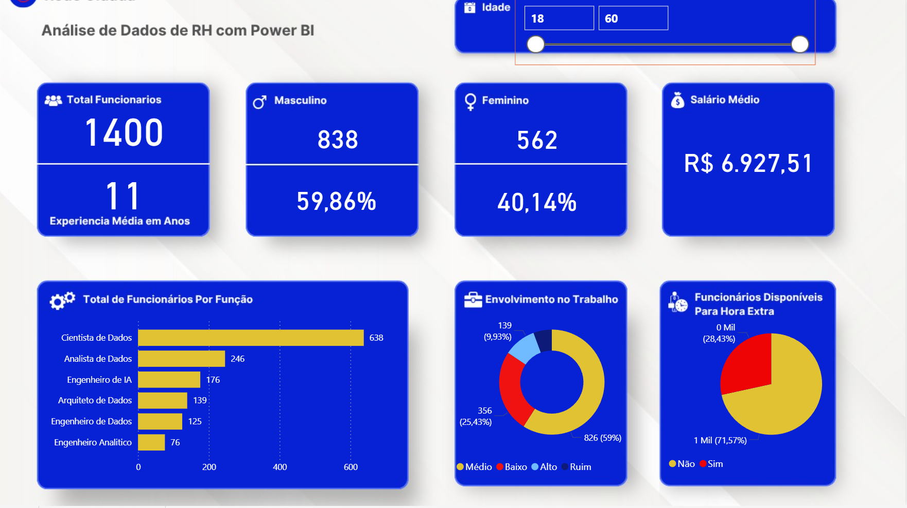
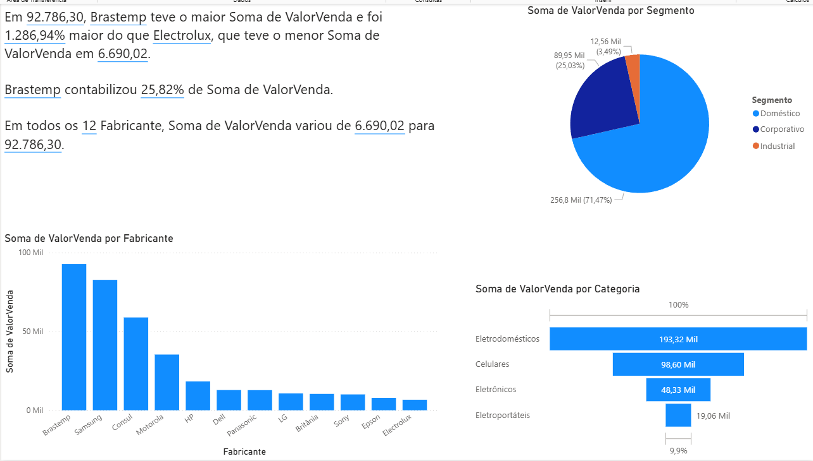
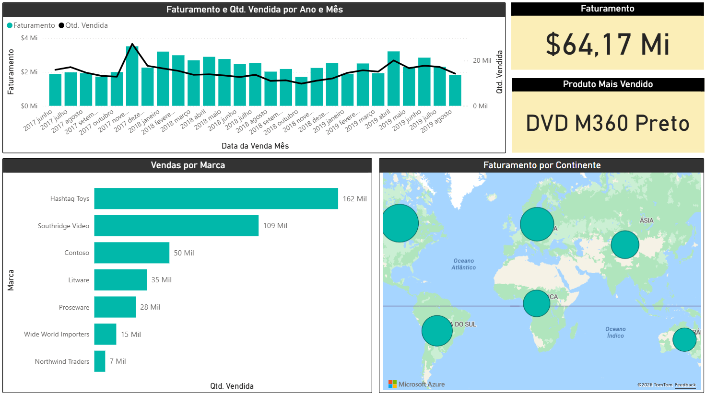
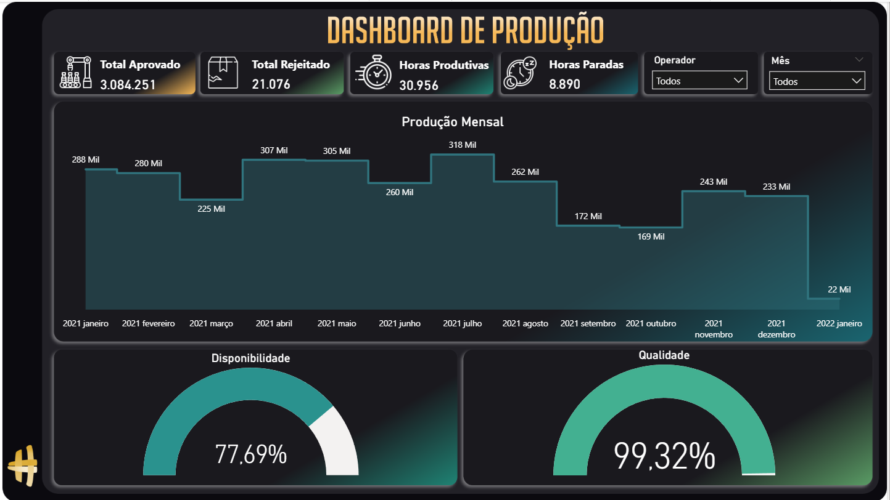
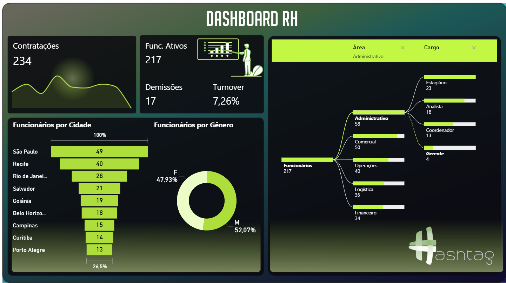
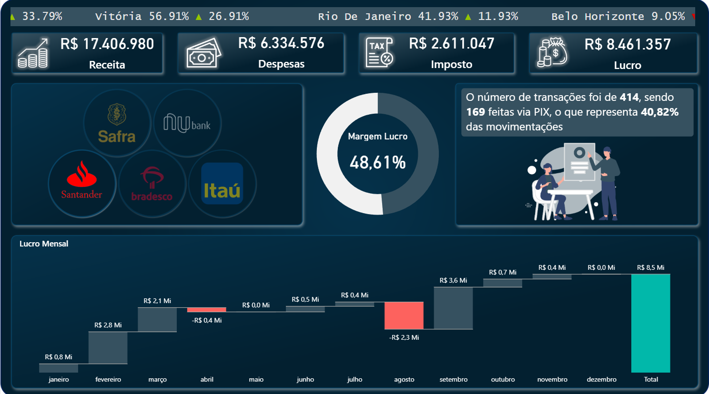

Dashboards desenvolvidos com Power BI, Excel e ferramentas de visualização para análise de indicadores, métricas e apoio à tomada de decisão.

Dashboard desenvolvido no Power BI para análise de indicadores de RH, funcionários, salário médio, idade, gênero e disponibilidade para hora extra.

Dashboard desenvolvido no Power BI com foco em análise de vendas, categorias, fabricantes, segmentos, performance comercial, geolocalização e análise inteligente de dados.

Dashboard desenvolvido em Power BI para acompanhamento de faturamento, quantidade vendida, marcas com maior desempenho e produto mais vendido, permitindo uma visão estratégica dos indicadores comerciais.

Dashboard desenvolvido em Power BI para monitoramento de produção, desempenho operacional, indicadores industriais e acompanhamento estratégico dos processos produtivos.

Dashboard desenvolvido em Power BI para análise estratégica de recursos humanos, acompanhando turnover, contratações, demissões, distribuição de gênero, colaboradores por cidade e estrutura organizacional.

Dashboard desenvolvido em Power BI para análise financeira bancária, acompanhando receita, despesas, impostos, lucro, margem de lucro, transações via PIX e desempenho por instituição financeira.